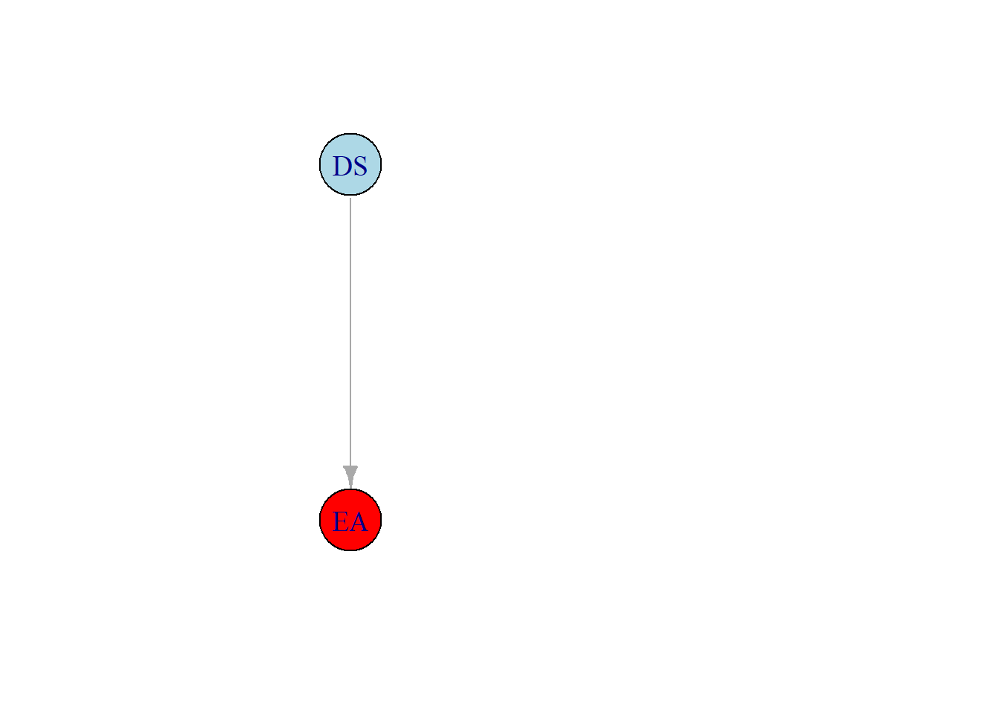
Connection Between Naïve Bayes and Logistic Regression
Introduction
Last year I went crazy and started my statistics rabbit hole; one of the biggest mind blowing experiences was when I was taking a course called “Probabilistic Graphical Models” by Daphne Koller in Coursera and I understood the connection between these two classical modes: logistic regression (LG) and Naïve Bayes (NB). This is a fascinating topic and really you start to dig in about the nature of modelling, and how they resemble to Prague’s Golem; a metaphor taken from Richard McElreath’s book “Statistical Rethinking”, in which he writes “Its abundance of power is matched by its lack of wisdom” (McElreath 2020). Hope you enjoy it.
Basics
This section is for those who aren’t familiar with Bayesian Networks (BNs) nor Markov Networks (MNs) — so almost everyone. They are fascinating. If you don’t get what MNs are, do not be afraid, it is normal and you shouldn’t be discouraged from finishing all the article. I will keep it brief, I promise ;).
Bayesian Networks(BNs)
Imagine you are looking for an architect job and start wondering what qualities that companies look for. Your guess is they are looking for some technical drawing skills. So in a way you are saying that to be employed at a architects firm (we will call it EA) depends on having good technical drawing skills (DS); in probability we say \(EA\) given (“|” it expresses dependency) \(DS\), and can be written as:
\[EA | DS\]
This can be represented as a Graph (\(G\)):
We can write the probability (\(P\)) of \(AF\) as:
\[ P(EA | DS) \]
But you start to wonder that they also need candidates with architect-software skills (Sof), so you draw it:
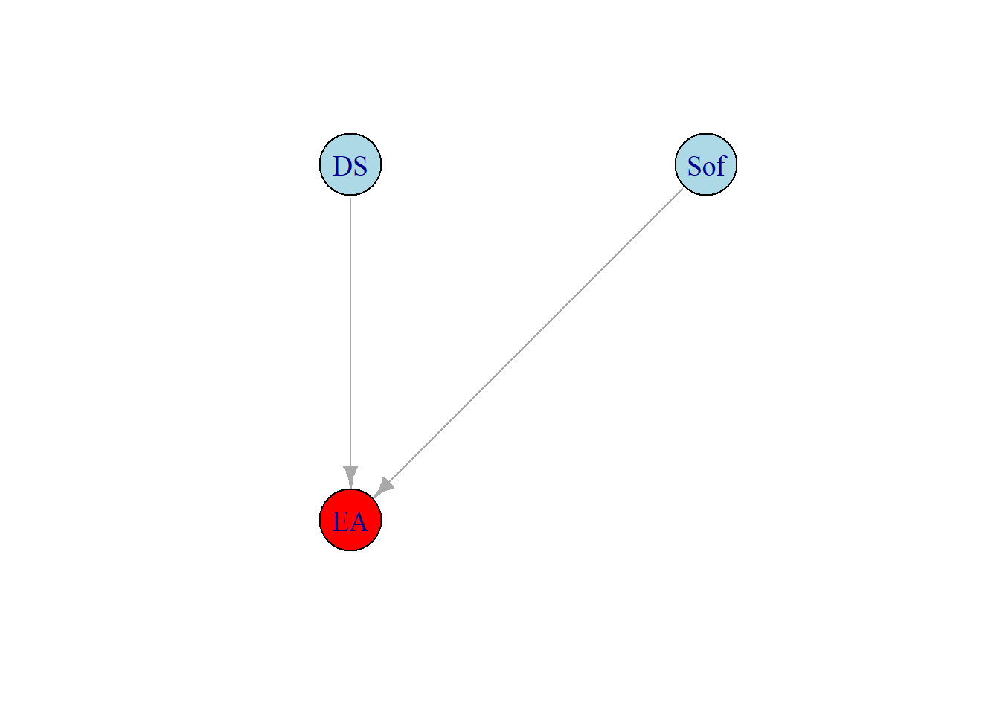
Now we say “\(EA\) is given by \(DS\) and \(Sof\)” (\(EA | DS, Sof\)). This is great, we have some notion of what to be employed as an architect depends on, this in itself, the \(G\) (graph), is a model; however the objective of BNs is to encapsulate the joint probability distribution of the model, which is to say that the objective of BNs is to provide the probability of a combination of variables (the correct term is random variables, but right now do not bother differentiating the two terms). In this case the joint probability distribution is written as \(P(EA, DS, Sof)\) and is equal to the conditional dependencies (this “\(EA | DS\)” is a conditional dependency) of all the variables it depends on, specified by the graph, so:
\[ P(EA, DS, Sof) = P(EA | DS, Sof)P(DS)P(Sof) \] Note how \(DS\) and \(Sof\) are fully independent (they do not have a “|”).
Note
For the probabilistic known reader, we could derive Bayes’ rule from last equation if we want to know the probability of getting an architect job given the X variables
But \(Sof\) encapsulates many kinds of softwares, like AutoCAD, 3ds Max, … Let’s say there is 3 principal softwares (\(S_{1}, S_{2}, S_{3}\)), then the \(G\) is modify:
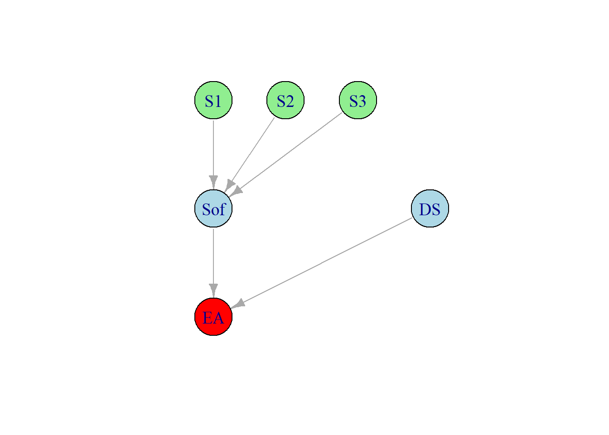
This is the same as the joint probability:
\[ P(EA, DS, Sof, S1, S2, S3) = P(EA | DS, Sof)P(DS)P(Sof |S_{1},S_{2}, S_{3})P(S_{1})P(S_{2})P(S_{3}) \]
We can go on to infinity creating this models, or \(G\), and they can get very tangled, but they are combination of dependencies and independencies. The mathematical representation of \(BNs\) for the joint probability distribution is:
\[ P(X_{1},...,X_{n}) = \prod_{i=1}^{n}P(x_{i}|Pa_{x_{i}}^{G}) \]
Where \(X_i\) represents the i variable (like Software Skills) and \(Pa_{x_{i}}^{G}\) means that it factorizes over the independencies. This equation is also called the chain rule for Bayesian networks – if you don’t know what \(\prod\) means, it means the product. Fantastic, BNs are very intuitive, nonetheless they have many algorithmic implications as well as properties that are beyonf the scope of this article.
Markov Networks (MN) a.k.a Markow Random Fields
Let’s look first how BNs fail:
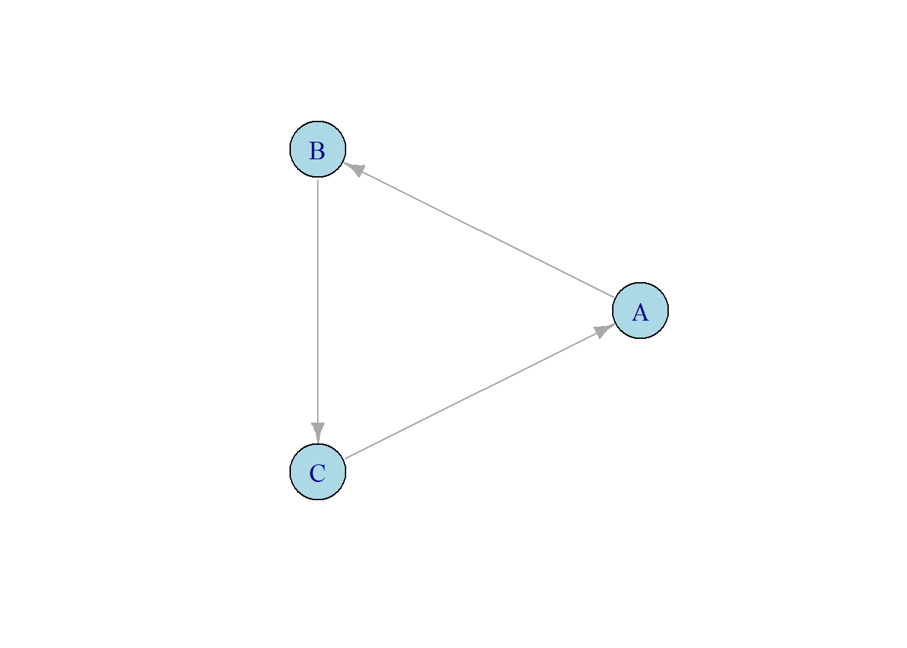
Given this \(G\) we know that A is independent of B and B is independent of C and C is independent of A, isn’t it? Well here something odd happens; to see it let’s derive joint probability distribution using the chain rule of BNs:
\[ P(A,B,C) = P(B|A)P(C|B)P(A|C) = P(B, C|A) P(A|C)= \]
\[ \longrightarrow P(A,B,C | C) ???? \] What? Is C dependent on itself? It turns out you can derive the same expression but with A or B at the end, which would incorrectly suggest self-dependence. If we want to represent these kinds of interdependencies we need MNs.
MNs do not have arrows and the lines that connects the nodes in the \(G\) does not represent dependencies/cause, they represent affinities/factors between all the nodes (\(\phi\)). You can think of them as affinity functions. In this case:
\[P(A,B,C) \approx \phi(A,B)\phi(A,C)\phi(B,C)\]
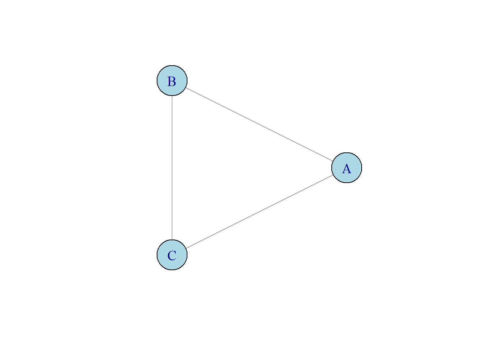
The general equation isn’t very friendly: \[ P(X) = \frac{1}{Z} \prod_{c\in clique } \phi(c) \]
Where \(Z\) is known as the partition function, which is just a normalization function (given it reduces the quantities to add up to 1) which equals to:
\[ Z= \sum_{c\in clique } \phi(c) \]
Abstract stuff. A clique is just the connections of sets (like \(A,B,C\)) that encapsulates an area in the \(G\). Last \(G\) just have one clique.
I won’t continue explaining MNs; they do not come natural to our primates brains. Just keep in mind that they just represent affinities.
Connection
Uff. Hope you still have energy for this section because this is the good stuff.
Am I naïve or just stupid?
Many models are made for prediction, where \(Y\) is our predictor and \(X\) is our features. In Nïve Bayes (NB) model we have a predictor, often written as \(C\), and a set of \(n\) features \(X \in (x_{1},..., x_{n})\). This is the \(G\) of NB model:
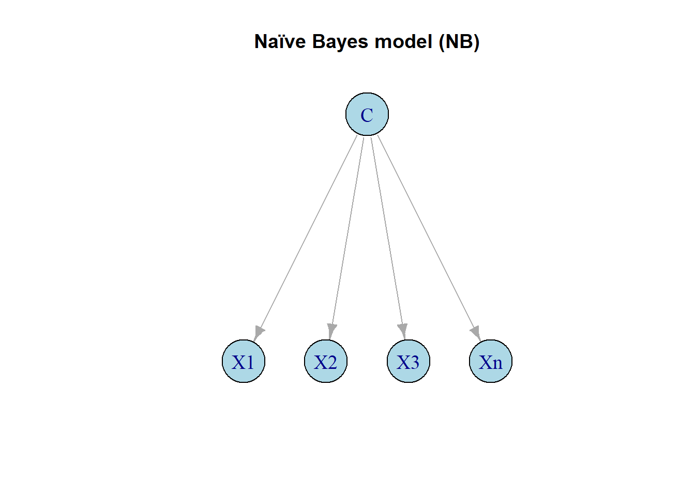
Can you guess what assumption (like dependencies or independencies) this \(G\) makes? (think about it)… This model is saying that in order to predict \(C\) we need variables that independent of each other but all dependent on \(C\) (In prbability theory independence is written as “\(\bot\)”, so here the assumption is written as: \((X_{i} \bot X_{j} | C)\)). This is why it is considered naïve; many times \(X_i\) and \(X_j\) aren’t independent. Imagine the case in which you want to predict happiness of people, you have just two variables: income —just for the sake of the example, although they are correlated—, and health. If you use NB you will not have accurate predictions, because you are assuming that \((income \bot health | happiness)\) and this just isn’t the case!! In many countries the income and health are correlated — just look how healthy poor people are in urban areas, and how rich people are.
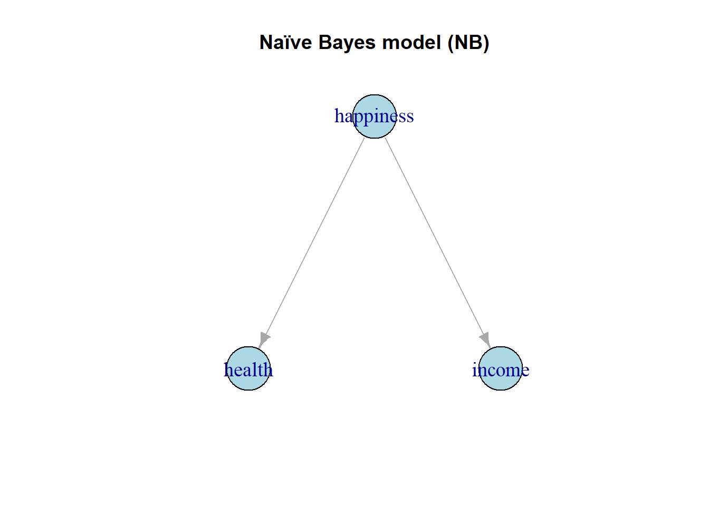
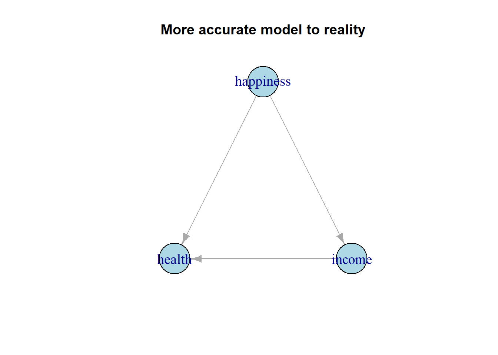
Note
If you know some statistics or casuality, these kinds of issues are more important in inference than in prediction because this arises what statisticians fear the most (suspense)…, confounders. Also, please do not think the naïvity of this model is just exclusive to this model.
Before showing the Naïve Bayes model, let’s remember the Chain Rule of BNs: \[ P(X_{1},...,X_{n}) = \prod_{i=1}^{n}P(x_{i}|Pa_{x_{i}}^{G}) \]
Using our NB example of happiness:
\[ P(happiness, income, health) = \] \[ \longrightarrow P(happiness)P(income|happiness)P(health|happiness) \] This is the NB mathematical model. Easy, isn’t it? Now this is the generalized form (look how it remarks the assumption \((X_{i} \bot X_{j} | C)\)):
\[ P(Y, X) = P(Y)\prod_{i=1}^{n}P(x_{i}|Y) \]
Now we know why it is naïve, what if I told you we can account for the dependencies of the model (like the dependency \(health|rich\)) without ruining the model or makeing it more complex. Behold.
Conditional Random Fields (CRFs)
We want to condition \(Y\) given \(X\), \(P(Y|X)\) so our model can account for all the dependencies — more technically, this means that we aren’t trying to capture the distribution of X, which is important in the NB model because we are estimating \(P(x_{i}|Y)\)– this is like not caring about the correlations/dependencies of \(X\).Trust me. This is where CRFs come into play.
Many math gibberish coming, but it is necessary
A CRF is define as a MN, which uses a set of factors (\(\Phi = \left\{ \phi_{1}(C_1),...,\phi_{n}(C_n) \right\}\)) (remember that they describe function of affinities, and \(C\) is relation of two variables or scope) between variables:
\[ \tilde{P}_{\Phi}(X, Y) = \prod_{i=1 } \phi_{i}(c_{i}) \] \(\tilde{P}_{\Phi}\) is the same probabilities as described in the MNs section but anormalized (without the \(\frac{1}{Z}\) term).However \(Z\) changes, it just becomes a function of \(X\) and sums over \(Y\):
\[ Z_{\Phi}(X) = \sum_{Y}\tilde{P}_{\Phi}(X, Y) \]
Then:
\[ P(Y|X) = \frac{1}{Z_{\Phi}(X)} \tilde{P}_{\Phi}(X, Y) \]
This different \(Z_{\Phi}(X)\) isn’t just a normalizing constant, now depending on the value of \(X\) it will change \(Z\) for the \(\tilde{P}(X,Y)\), it is like selection bias (if you are more pro you can think of it as creating a family of distributions given X), this property is what enable us to write the conditional \(P(Y|X)\) making us not care about the dependencies of features between the variables \(X\). This is what makes CRF such a powerful tool.
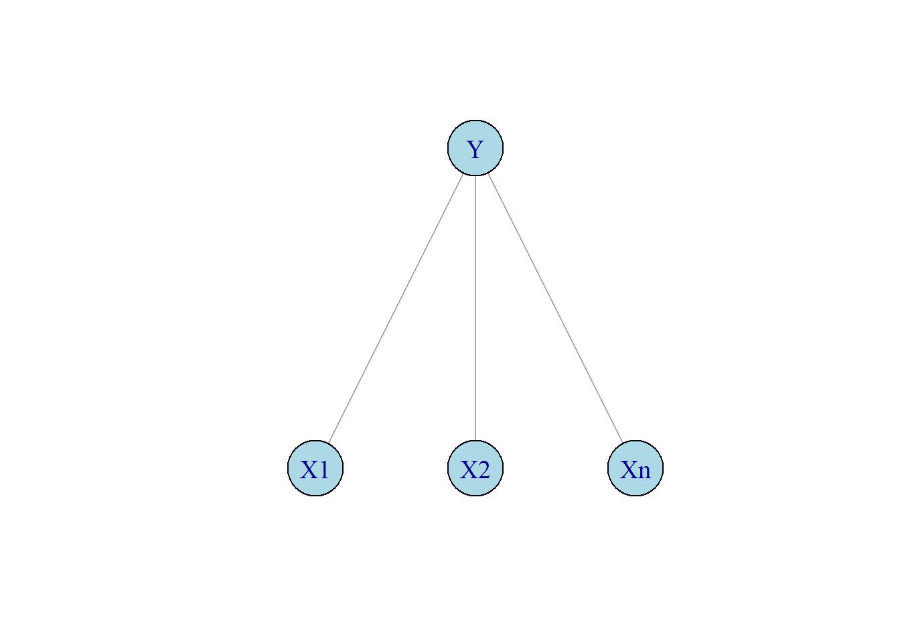
Playing with notation & logistic regresion
Coming back to the happiness example. Imagine you just have two values for happiness, \(Y\) (1 if you are happy, if not 0). Let’s write the logistic regression using an indicator function, \(I\) (an indicator function is just a conditional, pretty much like programming; like the happiness variable which takes two values: 1 if happy, 0 if not); with some features, \(X_i\) (either income or health).
\[ \phi_{i}(X_{i}, Y) = exp\left\{w_{i}I_{\left\{ X_{i} = 1, Y = 1 \right\}}\right\} \]
So if \(X_i = 1\) and \(Y = 1\) then \(I\) (the indicator function) takes the value 1; given the term \(w_i\) (this kind of terms are usually called weighted terms because they assign some weight, meaning a higher value (imagine you meet the condition and the indicator function takes the value of 1, depending on the weight the whole expression can take a bigger or smaller value; e.g. \((w_{1} = 0.5) \neq (w_{2} = 0.7)\) ), depending on \(X_i\) — very similar to the term \(Z_{\Phi}(X)\) from CRFs, doesn’t it?)
Now, imagine that we know \(Y\), we have two choices:
\[ \phi_{i}(X_{i}, Y = 1) = exp(w_{i}x_{i}) \textbf{ or } \phi_{i}(X_{i}, Y = 0) = 1 \]
Since \(I\) can either be 1 or 0, and if \(I\) is 0 then \(exp(0)\) which equals 1, \(exp(0) = 1\). Then we compute the unnormalized density (which in CRFs is the term \(\tilde{P_{\Phi}}\) which indicates it has not been normalized by \(Z_{\Phi}(X)\) ):
\[ \tilde{P_{\Phi}}(X, Y = 1) = exp\left\{ \sum_{i}w_{i}X_{i} \right\} \text{ or } \tilde{P_{\Phi}}(X, Y = 0) = 1 \]
Now normalized:
\[ P_{\Phi}(Y = 1 | X) = \frac{exp\left\{ \sum_{i}w_{i}X_{i} \right\}}{1+exp\left\{ \sum_{i}w_{i}X_{i} \right\}} \]
It is a sigmoid function as in logistic regression!!! Which is the same as:
\[ \longrightarrow \frac{\tilde{P_{\Phi}}(X, Y = 1)}{\tilde{P_{\Phi}}(X, Y = 0) + \tilde{P_{\Phi}}(X, Y = 1)} = \frac{1}{Z_{\Phi}(X)} \tilde{P}_{\Phi}(X, Y) \]
*If you still don’t see it remember that the normalizing value is: \(Z_{\Phi}(X) = \sum_{Y}\tilde{P}_{\Phi}(X, Y)\); the sum of all \(\tilde{P_{\Phi}}(X, Y)\) which in this case is a sum over two values.
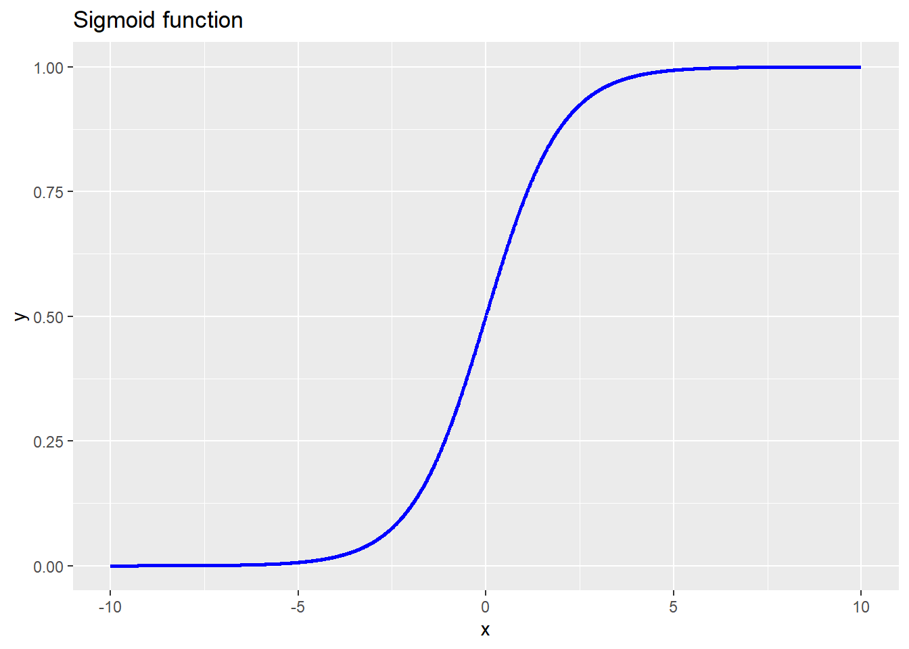
So a logistic regression (LR) is just a simple conditional random field (CRF) model!! Wow.
Conclusion or “It just feels the same”
A NB model is the same as an LR but with former just being simple BN and the latter a CRF, which is from the family of MNs. I know this is mind blowing. This connection really helps to grasp what modelling really is like, a tool that help us understand reality but isn’t reality itself.
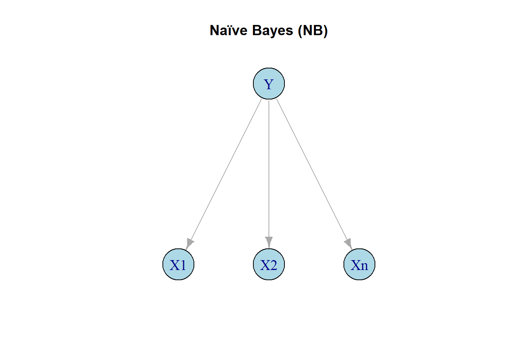
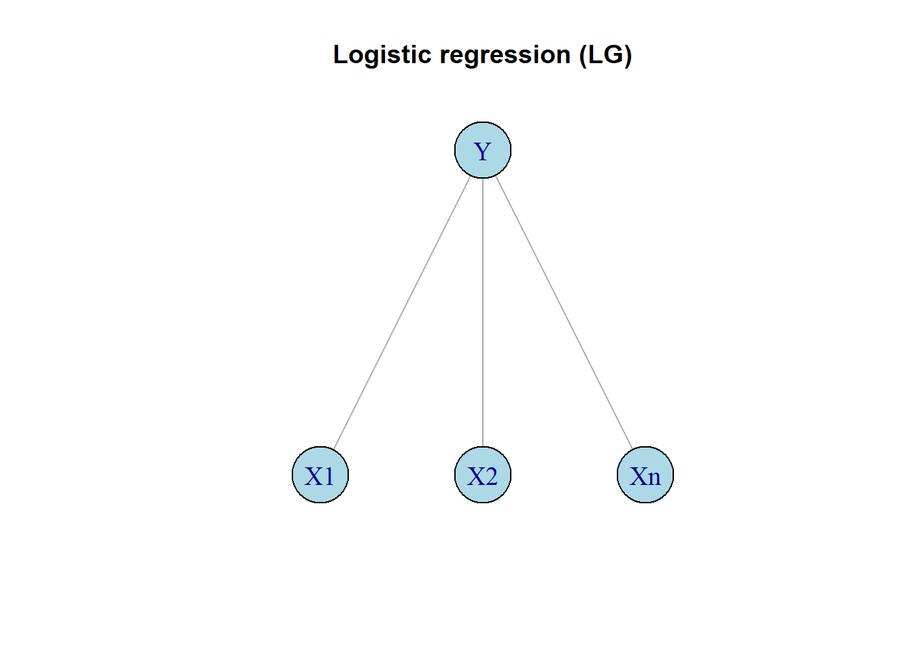
A technical note for the probability junkies — as I am
The goal in BNs (like NB model) is to compute a joint density and in MNs (like CRF model) is a conditional density; what I mean with density is a probability density function, PDFs (or a mass density function, PMFs, for discrete values) that encapsulates an array of probabilities of an event or parameter (it can be something more abstract for unsupervised methods like Dirichlet or Gaussian models) of n dimensions — I don’t know where I heard it but it’s said that Fisher (a famous frequentist statistician) could grasp what multidimensional models structure mean in his head; btw a hater of bayesianism
P.D. & Further reading
I love making the first article of my blog. I hope you liked it. If you want to know about more connections, like hidden markov networks and Linear-chain, I recommend this article see Sutton and McCallum (2010). This article was heavily based by the excellent book of Koller and Friedman (2009), which I am very keen of.
My adventures in statistics and modelling really have transformed how I see the world and has made me more humble; one of the objectives of this blog is to share some knowledge which is the least I can do. The code for the figures is on GitHub.
References
Koller, Daphne, and Nir Friedman. 2009. Probabilistic Graphical Models: Principles and Techniques. Cambridge, Massachusetts: MIT Press. http://mcb111.org/w06/KollerFriedman.pdf.
McElreath, Richard. 2020. Statistical Rethinking: A Bayesian Course with Examples in r and Stan. 2nd ed. Boca Raton, FL: CRC Press.
Sutton, Charles, and Andrew McCallum. 2010. “An Introduction to Conditional Random Fields.” arXiv Preprint arXiv:1011.4088. https://doi.org/10.48550/arXiv.1011.4088.